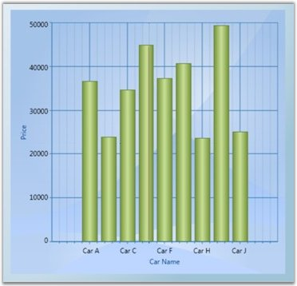

Chart lets you to directly bind LINQ results as the Data Source for a Chart Series. The following code illustrates how to bind LINQ results as the data source for the Chart Series.
|
[C#]
// Namespace to be included for XDocument. using System.Xml.Linq;
public partial class Window1 : Window { public Window1() { InitializeComponent();
// Create Data to associate with the series. CreateDataToSeries();
// Add Data Source with the series. Queries Price value more than 30,000. this.SetDataSource(carlist.Where(s => s.Price > 30000).ToList()); }
// Add Data Source with the series. private void SetDataSource(IList source) { Chart1.Areas[0].Series.Clear(); ChartSeries series = new ChartSeries();
// Data Source for series 1. series.DataSource = source;
// Binding X with Name. series.BindingPathX = "Name";
// Binding Y with Price. series.BindingPathsY = new string[] {"Price"};
// Add series to Chart. Chart1.Areas[0].Series.Add(series); }
// Create Data to associate with the series. IList<Car> carlist; private IList<Car> CreateDataToSeries() { carlist = new List<Car>(); carlist.Add(new Car("Car A", 36700, 200, 28)); carlist.Add(new Car("Car B", 23970, 170, 23)); carlist.Add(new Car("Car C", 34675, 160, 22)); carlist.Add(new Car("Car D", 44950, 180, 36)); carlist.Add(new Car("Car E", 74950, 150, 18)); carlist.Add(new Car("Car F", 37300, 190, 25)); carlist.Add(new Car("Car G", 40765, 200, 26)); carlist.Add(new Car("Car H", 23799, 150, 22)); carlist.Add(new Car("Car I", 49400, 160, 29)); carlist.Add(new Car("Car J", 25149, 200, 22)); return carlist; } switch (queryby) { case "Price": this.SetDataSource(carlist.Where(s => s.Price < double.Parse(value)).ToList()); break; case "MaximumSpeed": this.SetDataSource(carlist.Where(s => s.MaximumSpeed < double.Parse(value)).ToList()); break; case "Mileage": this.SetDataSource(carlist.Where(s => s.Mileage < double.Parse(value)).ToList()); break; } }
// Add class Car. class Car { public string Name { get; set; } public double Price { get; set; } public double MaximumSpeed { get; set; } public double Mileage { get; set; }
public Car(string name, double price, double maxspeed, double mileage) { this.Name = name; this.Price = price; this.MaximumSpeed = maxspeed; this.Mileage = mileage; } } |
The following screen shot illustrates how a Chart Series is associated to the Chart by using LINQ results.

Figure 59: Chart Series with LINQ results - Price more than 30,000 is Queried
See Also
IList Data Source
ObservableCollection Data Source
Data Binding for Child Level Properties
CollectionViewSource Data Source